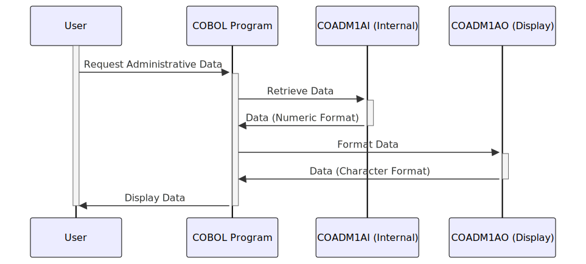

Gerado em: 1 de outubro de 2024
Título do Documento: Gerenciamento de Dados Administrativos do CardDemo
Descrição Resumida:
Este documento descreve a funcionalidade de um programa COBOL que gerencia dados administrativos dentro da aplicação CardDemo. Esses dados são cruciais para apresentar informações consistentes aos usuários e incluem elementos como títulos de tela, datas, horas, nomes de programas, opções de menu e mensagens de erro. O programa utiliza duas estruturas de dados principais: uma para armazenamento interno eficiente e outra para exibição amigável ao usuário.
Histórias de Usuário:
Como administrador do sistema, preciso de uma maneira confiável de gerenciar e exibir informações administrativas de forma consistente em toda a aplicação CardDemo para garantir uma experiência clara e amigável.
Épico Relacionado:
6 - Gerenciamento de Usuários e Segurança
Requisitos Funcionais:
-
Definir Estruturas de Dados:
- O programa define duas estruturas de dados:
COADM1AI e COADM1AO.
COADM1AI armazena dados em um formato numérico compacto, otimizado para processamento interno.COADM1AO redefine COADM1AI, mapeando os dados numéricos para os campos correspondentes baseados em caracteres para exibição em telas ou relatórios.
-
Gerenciar Dados Administrativos:
- O programa lida com vários elementos de dados administrativos:
- Nome da Transação: Usado para identificação interna e registro.
- Títulos de Tela: Exibidos na parte superior das telas para orientação do usuário.
- Data e Hora Atuais: Mostrados para referência do usuário.
- Nome do Programa: Usado para identificação e navegação.
- Opções do Menu: Apresentadas ao usuário para interação.
- Opção Selecionada: Armazena a escolha do usuário no menu.
- Mensagem de Erro: Transmite mensagens do sistema ou notificações de erro ao usuário.
-
Garantir Exibição Consistente:
- O programa usa
COADM1AO para apresentar dados em um formato baseado em caracteres amigável, garantindo consistência em diferentes telas e relatórios.
Requisitos Não Funcionais:
- Desempenho: O programa deve processar e exibir dados administrativos de forma rápida e eficiente.
- Confiabilidade: O programa deve gerenciar e apresentar dados de forma confiável, sem erros ou inconsistências.
- Manutenibilidade: O código deve ser bem estruturado e documentado para facilitar a manutenção e as atualizações.
Critérios de Aceitação:
- O programa define e preenche com sucesso as estruturas de dados
COADM1AI e COADM1AO.
- Os dados administrativos são exibidos com precisão e consistência em telas e relatórios.
- O programa lida com a formatação de data e hora de acordo com os requisitos do sistema.
- As mensagens de erro são claras, concisas e informativas para os usuários.
Melhorias de Código:
- Tratamento de Erros: Implementar tratamento de erros mais robusto, incluindo o registro de erros em um arquivo para depuração.
- Documentação de Código: Adicionar comentários claros e concisos para explicar o propósito e a funcionalidade das diferentes seções do código.
- Validação de Dados: Incluir verificações de validação de dados para entradas do usuário, para evitar que dados inválidos sejam armazenados.
Melhorias de Segurança:
- Controle de Acesso: Implementar mecanismos de controle de acesso para restringir a modificação não autorizada de dados administrativos.
- Registro de Auditoria: Registrar todas as alterações feitas nos dados administrativos para fins de auditoria e rastreamento.
Diagrama Conceitual:

–Made by “Smart Engineering” (by Compass.UOL)–